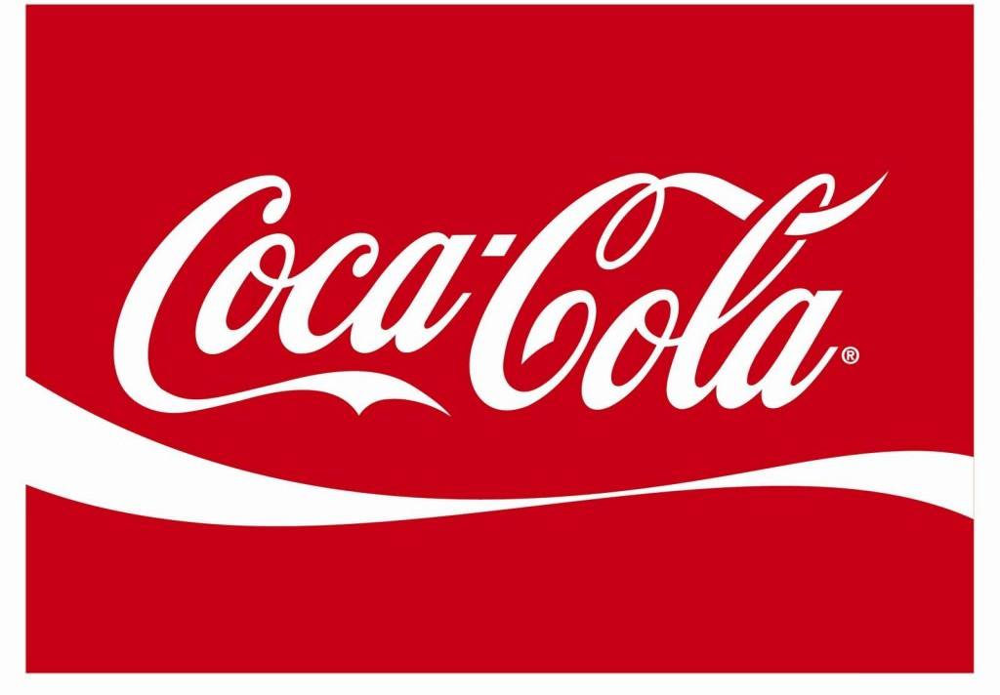
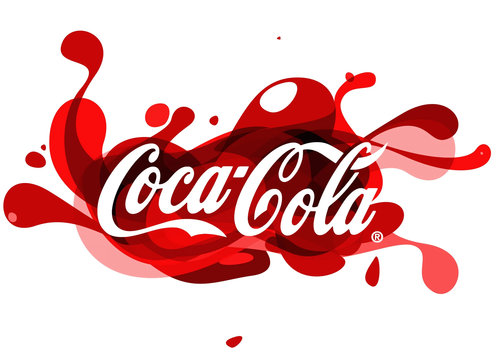
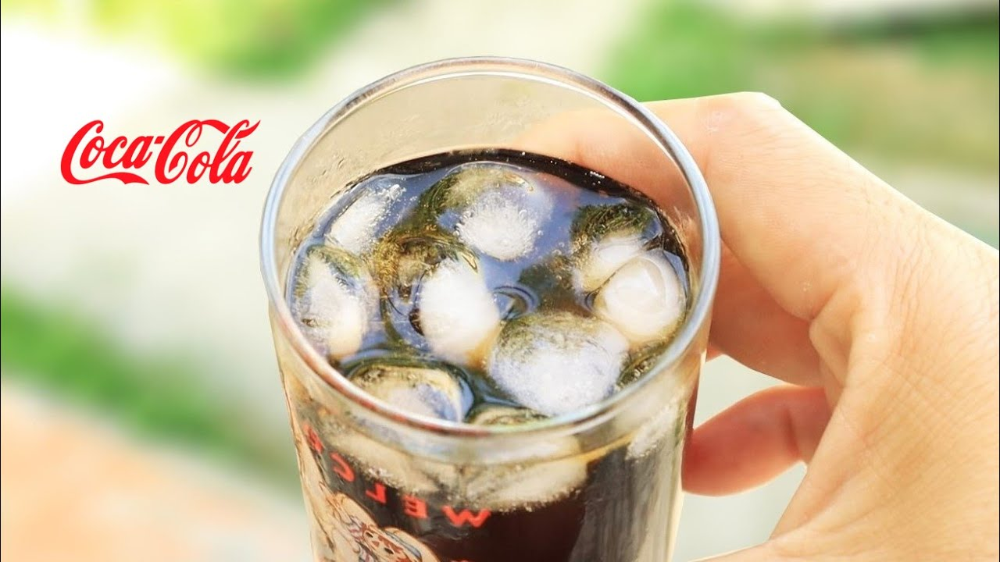
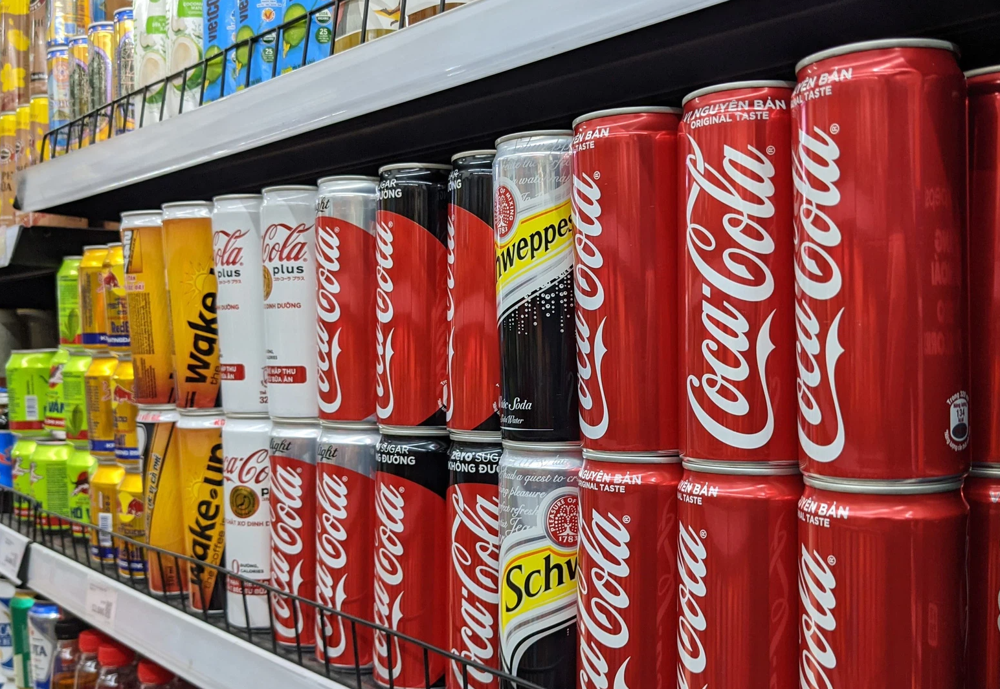
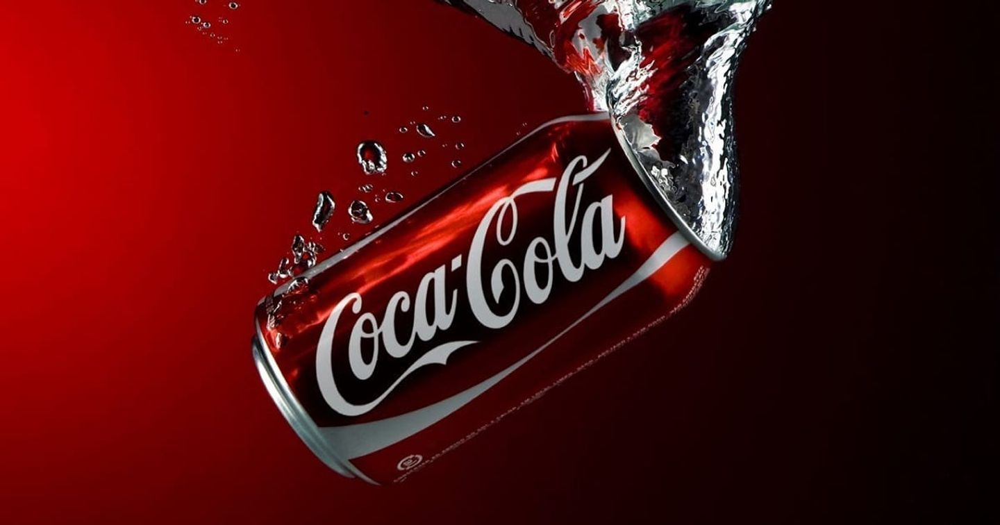

HÂN HẠNH GIỚI THIỆU

Coca Cola là thương hiệu đã quá quen thuộc với người tiêu dùng ở nhiều quốc gia trên thế giới, trong đó có Việt Nam. Thương hiệu được thành lập bởi ông John Pemberton tại Atlanta vào năm 1886. Chỉ trong vòng vài năm hoạt động, Coca Cola đã có sự thành công đột phá. Thương hiệu được người tiêu dùng công nhận, sản phẩm nhanh chóng vươn tầm thế giới.

Sản phẩm của Coca Cola có thể bắt gặp ở bất kỳ đâu, từ cửa hàng tiện lợi, quán ăn, quán nước cho đến những nhà hàng, khách hàng,… Sản phẩm có mặt ở hầu hết mọi nơi. Chỉ như vậy cũng đã có thể nhận thấy được vị trí của Coca Cola trên thị trường quốc tế. Bất kể sự cạnh tranh khốc liệt của nhiều thương hiệu tầm cỡ khác như Pepsi, Redbull, Unilever,… Coca Cola vẫn có chỗ đứng vững chắc trên thị trường và nhận được sự ưa chuộng từ người dùng.

Thông qua các chiến dịch của mình, chúng tôi muốn tạo ra nhiều điều kỳ diệu thực sự (Real Magic) hơn – đó là những khoảnh khắc cá nhân kết nối với các điểm đam mê của mọi người, phù hợp với văn hóa và phù hợp với giá trị cốt lõi của chúng tôi với tư cách là một doanh nghiệp.

Coca-Cola Buy the World a Coke: Cỗ máy giúp bạn gửi Coca đi khắp thế giới
Lấy cảm hứng từ quảng cáo Hilltop vượt thời gian của Coca-Cola, Google hợp tác với Coca-Cola tạo ra các máy bán hàng tự động tích hợp với màn hình kỹ thuật số cho phép mọi người có thể "gửi một lon Coke cho khắp thế giới".
Bạn có thể quyết định nơi bạn muốn gửi Coke bằng cách chọn một trong nhiều máy bán hàng đặt trên toàn cầu, đính kèm thêm video hoặc tin nhắn văn bản muốn nhắn gửi đến người nhận.
Một video động với Chế độ xem phố của Google Maps và đồ họa chuyển động tổng hợp cho thấy hành trình của Coke từ vị trí hiện tại của người xem đến các máy bán hàng tự động trên toàn cầu.
Những lon Cocke này sẽ được trao ngẫu nhiên đến tay những người lạ cách xa hàng ngàn dặm, họ cũng có thể nói “cảm ơn” bằng cách gửi một thông điệp đến cho người gửi.
Coca-Cola Hug Machine: Mang đến những cái ôm tuyệt vời
Các sinh viên tại Đại học Quốc gia Singapore (NUS) đã vô cùng ngạc nhiên khi một máy bán Coca-Cola tự động được đặt trong khuôn viên trường học với dòng chữ 'Hug Me'. Điều làm cho chiếc máy bán hàng tự động này trở nên đặc biệt đó chính là nó phản ứng được với những cái ôm vật lý, khi có ai bước tới ôm nó, bạn sẽ được một lon Coke miễn phí. Việc thể hiện tình cảm nơi công cộng là không phổ biến và từ lâu đã không được khuyến khích ở Singapore, nhưng đang có xu hướng gia tăng trong giới trẻ, chiến dịch của Coca-Cola như một lời cổ vũ nhiệt liệt đến với giới trẻ.